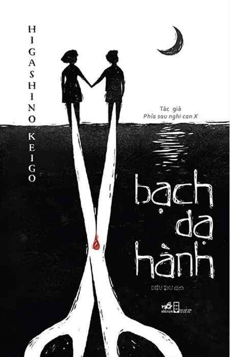

REVIEW SÁCH
Bạch dạ hành
Nhận xét của mình
Chả hay... mình thấy seeding trên tiktok khá nhiều, nhiều người khen Bạch dạ hành mà đọc xong mình thấy hơi thất vọng. Cốt truyện có vẻ tốt nhưng mà kết làm hụt hẫng quá, kết như bị cắt cụt 1 phát không kịp trở tay. Quyển này thiên về tâm lý hành vi con người (có vẻ méo mó bởi nó nhiều yếu tố dâm dục và tình yêu trai gái, các bạn nào chưa đủ 18 tuổi hay 18 tuổi rồi nhưng "chưa lớn" về tâm lý thì đừng đọc nhơ). Nhiều tình tiết mình thấy vẫn còn để dở, không phải là không giải quyết mà không triệt để nên nó còn lập lờ quá, không rõ ràng, cảm giác không có một ván lật ngửa hay công khai công bố một cách chính thức. Càng đọc càng thấy bí ẩn và li kì nhưng kết hơi kiểu đầu voi đuôi chuột. Plot twist trong truyện khá dễ đoán, đọc gần gần đến cuối mình cũng ngờ ngợ được rồi, có lẽ do mình đọc plot twist nhiều nên overthinking. Hay nhưng cái kết không thoả mãn lắm so với những gì mà cốt truyện thể hiện.
🛍️ Tìm mua cuốn sách
Bạn có thể tham khảo giá tại các nhà sách online: